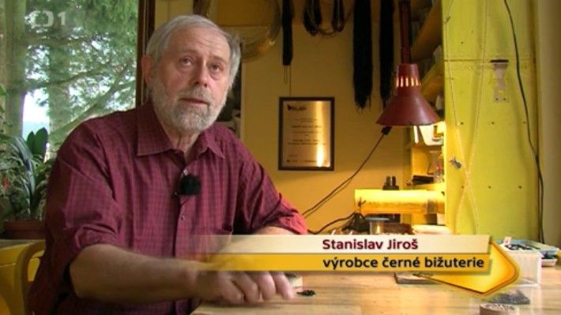
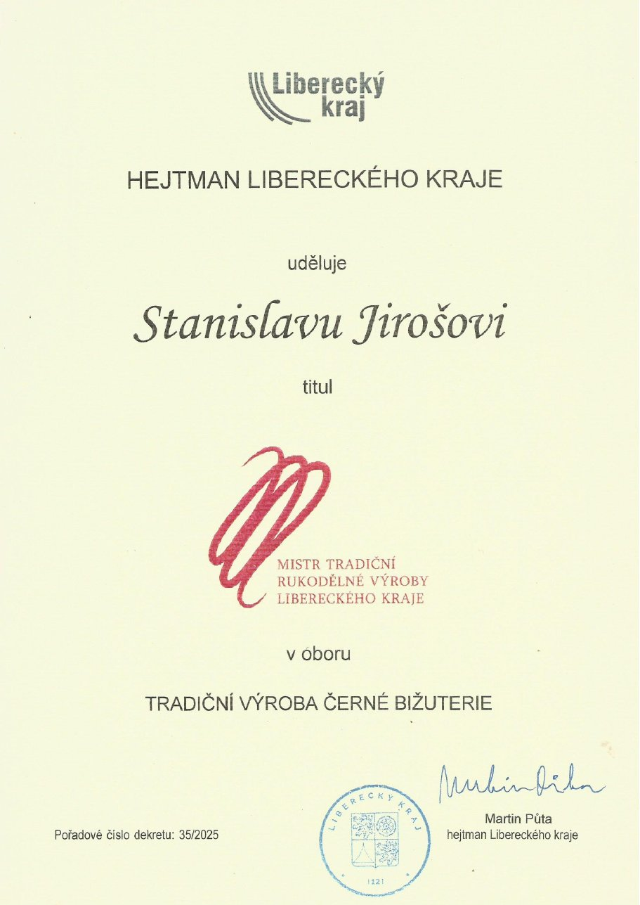
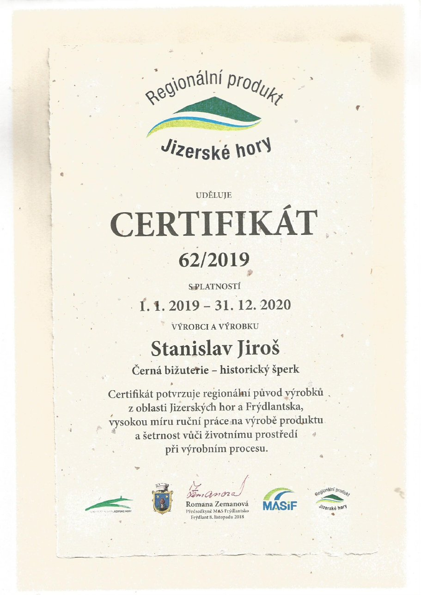
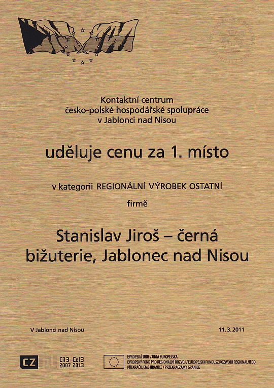

Ocenění
▶ Video
Sledujte reportáž Toulavé kamery
Česká televize natočila černou bižuterii — po kliknutí se přehrávač otevře přímo u reportáže (asi od 5:40). Na začátku může být krátká reklama.



2025 – Titul „Mistr tradiční rukodělné výroby Libereckého kraje“ v oboru tradiční výroba černé bižuterie, udělený hejtmanem Libereckého kraje (dekret č. 35/2025)

2019 – Certifikát „Regionální produkt Jizerské hory“ č. 62/2019 pro Černou bižuterii – historický šperk (platnost 1. 1. 2019 – 31. 12. 2020), potvrzuje regionální původ, vysoký podíl ruční práce a šetrnost k životnímu prostředí.